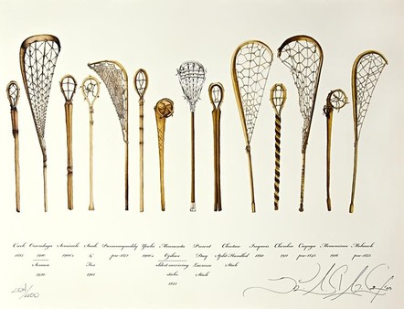
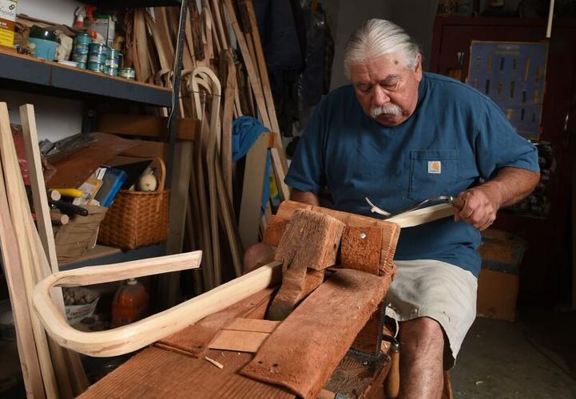
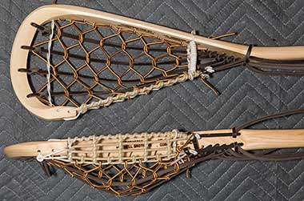
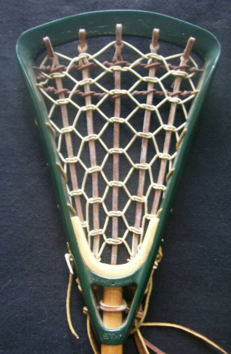
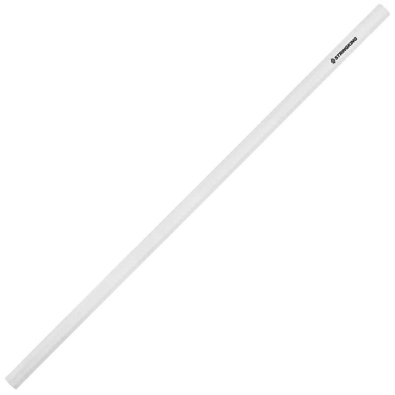
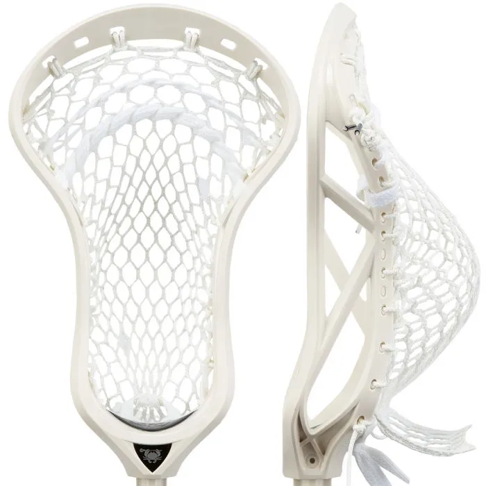
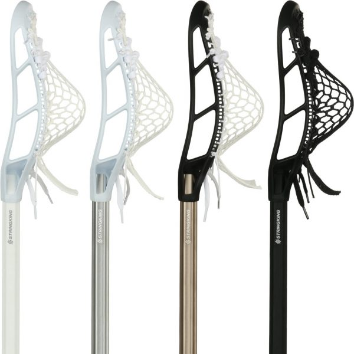

The lacrosse stick is important to the game of lacrosse for more than
just its use. It is referred to as an "extension of the body" in the
lacrosse community. The original wooden lacrosse sticks took careful
work to be made.

It requires a wood carver, steamer, and sinew. It is no easy task and
takes a long time. On top of forming the wooden shaft, stringing the
stick with traditional leather pockets also takes time and care.

In the 1600s, they would develop a wooden head, so that the wood is
fully around the head of the stick.

It wouldn't be until 1970 when the company STX would patent the first
plastic molded head, separating the shaft and the head.

The first aluminum shaft was created in 1980. Then the first metal shaft
would come around 1990. Wooden shafts are still allowed and used to this
day, but metal shafts are far more popular.

Mesh pockets would also be developed at this time, offering an easier
alternative to stringing with traditional leather pockets.

The plastic head, mesh pocket, and metal shaft are now staples in the
game. Companies like STX, Maverik, and Warrior have helped develop the
technology to become what it is today.